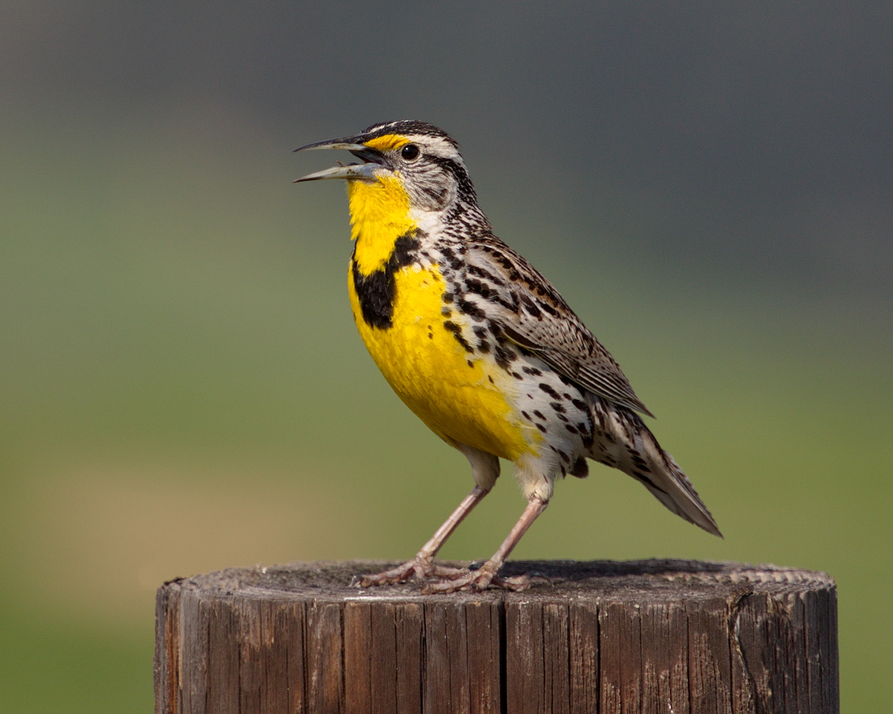

Nebraska
Nebraska, which was admitted to the union as the 37th state on March 1, 1867, two years after the end of the American
Civil War, contains some of the nation’s best ranchland and farmland. Prior to its statehood, the Nebraska Territory had
been sparsely settled but saw growth during the California Gold Rush in 1848, with a larger wave of settlers arriving as
homesteaders in the 1860s. Although the territorial capital of Nebraska was Omaha when it achieved statehood the seat of
government was moved to Lancaster, which was later renamed Lincoln after President Abraham Lincoln, who had recently
been assassinated. Nebraska is bounded by South Dakota to the north, Kansas and Colorado to the South, Wyoming to the
West and Iowa and Missouri to the East.
| Date of Statehood |
Capital |
Population |
Size |
| March 1, 1867 |
Lincoln |
1.96 million |
77,358 square miles |
Motto
Equality Before the Law
Bird
Western Meadowlark

Interesting facts
-
The world’s largest exhibited mammoth skeleton was found on a farm in Lincoln County in 1922. Originating from the Late
Pleistocene Era, “Archie” is on display at the University of Nebraska State Museum.
-
Nebraska is the only state with a nonpartisan, unicameral legislature. Promoted by Senator George Norris for its
efficiency, cost-effectiveness and ability to eliminate secretive conference committee meetings common in bicameral
legislatures, Nebraska has been governed by a single-house legislature since 1937.
-
Bailey Yard in North Platte is the world’s largest train yard, situated on 2,850 acres of land spanning eight miles. It
manages as many as 10,000 rail cars each day and can repair up to 20 cars per hour in its immense locomotive repair
shop.
-
The Ogallala Aquifer, which lies beneath 174,000 square miles of eight states extending from South Dakota down to
western Texas, provides almost all of the water for residential, industrial and agricultural use in the High Plains
region. Two-thirds of the Ogallala’s total supply comes from Nebraska.